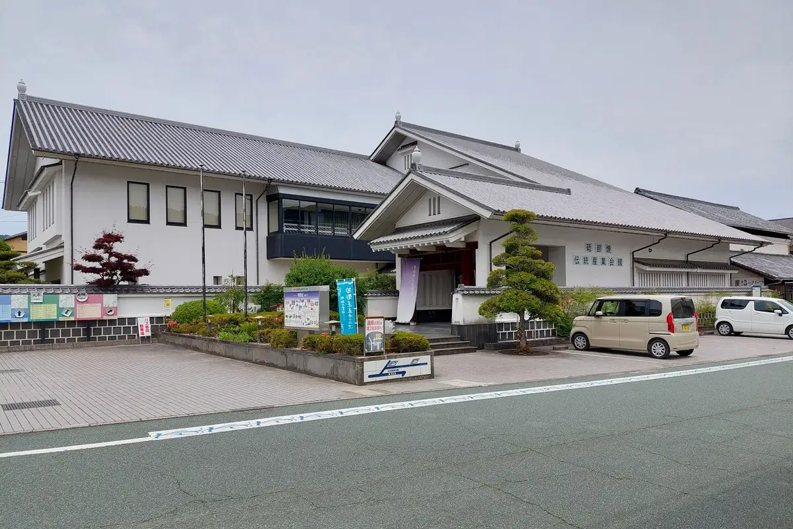
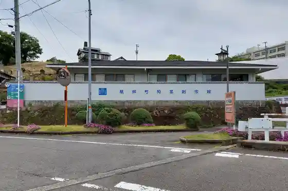
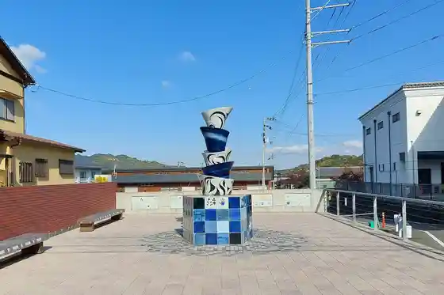

Tobe
Tobe · Ehime
Tobe
Highlighted on the Ehime map.

Stay
Nando Nochi Onsen Hotel Teiregi Kan
Toki Chijin - JIJIJIN Matsuyama (Kyu :TOBE Oberuju Resort)
Dining
Kobushi Shokudo
Sumibi Yakitori
Viewpoint Resutoran SKY GARDEN
Yamadori Seika
Piza Roiyaruhatto Tobe Takao Ta Mise
Pasuko Tobe Mise
Kohii Kizoku
Zuzukitchin
Kushi no Yaki Oni no Nomi Kui Tokoro
Toki Chijin MATSUYAMA
Udon Chaya Hokuto Tobe Mise
Giyatei
IPPO
Nakamaru
Pittsueria Torenta no Ve
SANKAKU754
Onsen
Toki Chijin - JIJIJIN Matsuyama Furo
Sights
Tobe Yaki Dento Sangyo Hall
Tobe Yaki Togei Kan

Tobe Zoo
Tobe Yaki Taimatsu Monyumento
